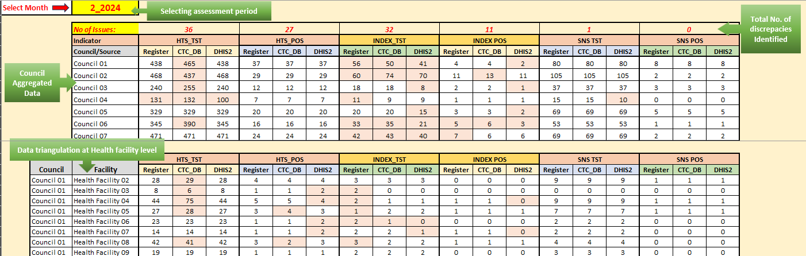
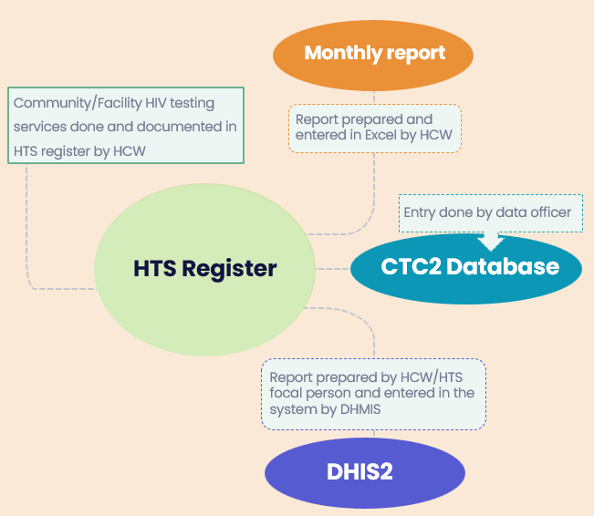
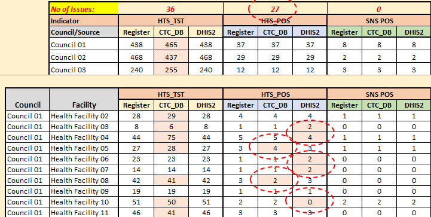
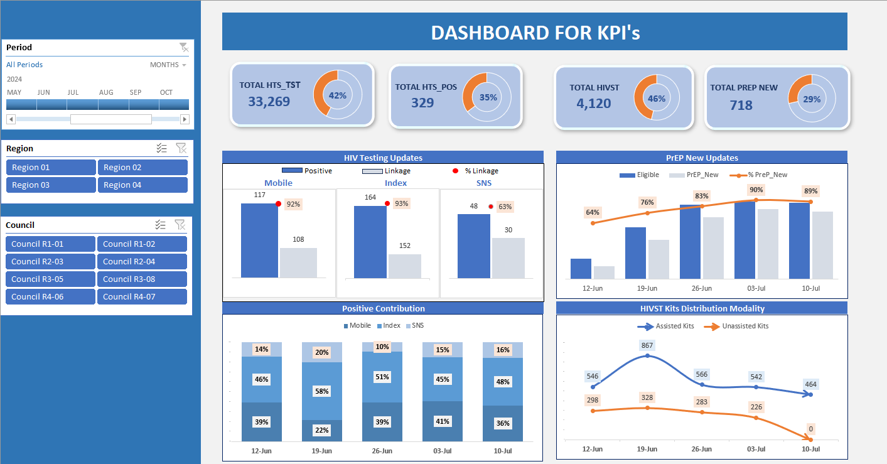
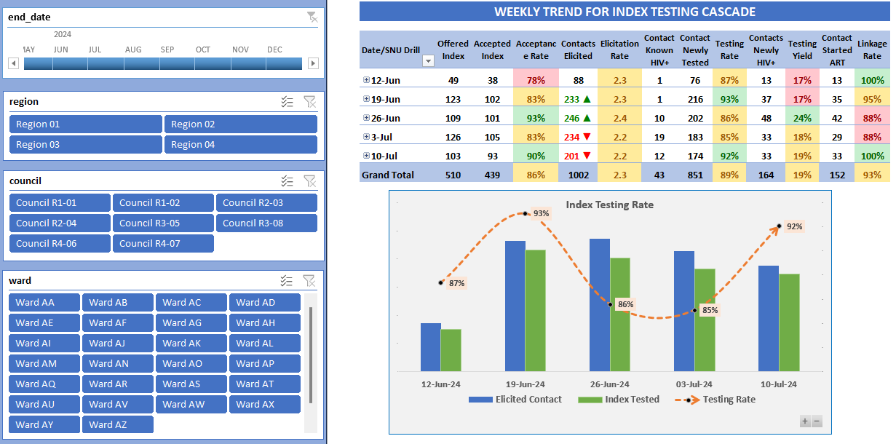
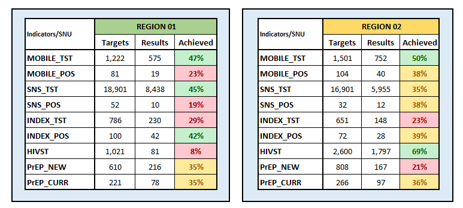

MEL Tools & Systems Design
Data Triangulation Tool - DTT
Introduction
In the field of data management, data integrity is the foundation of reliable reporting and evidence based decision making. However, when identical key performance indicators (KPI's) are tracked across multiple data sources,
inconsistency can emerge due to differences in reporting timelines, data entry practices, system structures, or human error.
To address this challenge, I designed a comprehensive Excel DTT that systematically compares and reconciles KPI's across three critical data sources: DHIS2, CTC database and Monthly report.
Thus the tool included selection of assesment period, number of dicrepancies (issues) identified, and conditional formatting to highlight mismatches, making it easy for users to quickly see where data did not align and needed attention.
Rather than treating the issue as a data collection problem, I recognized it as a data alignment problem. The goal was not simply to gather more data, but to ensure that all reporting systems were telling the same story.
The tool enabled data teams to quickly identify discrepancies, investigate their causes, and improve the consistency and reliability of reported results.

Each month, project teams were required to monitor performance and prepare reports for program management and stakeholders.
Producing high-quality reports depended on having data that was accurate, timely, and consistent across all reporting platforms.
However, data originated from multiple systems, each with its own workflow and potential sources of error.
Because these systems relied on different users, reporting schedules, and data entry processes, differences between reported figures frequently occurred. As a result,
significant time was spent determining which numbers were correct instead of analyzing performance and program outcomes.
Because these systems relied on different users, reporting schedules, and data entry processes, differences between reported figures frequently occurred. As a result, significant time was spent determining which numbers were correct instead of analyzing performance and program outcomes.

Sometimes aggregated data may appear clean and consistent, while underlying discrepancies remain hidden at lower levels.
For example, in the figure on the right, the HTS_POS indicator for Council 01 shows no discrepancy.
However, when the data is examined at the facility level, several discrepancies become apparent. These inconsistencies are masked in the aggregated totals because differences at individual facilities offset each other.
To address this challenge, I introduced a Number of Issues row above each indicator. This feature helps identify hidden discrepancies that may not be visible in aggregated results.
For example, the SNS_POS indicator shows 0, indicating that the data is fully consistent across all sources.

Building the Solution
To address this challenge, I designed a centralized Excel Data Triangulation Tool capable of comparing data from all three reporting sources in a single environment. The development process included:
- Mapping the complete data flow to understand how information moved between systems.
- Creating standardized data entry sheets for DHIS2, CTC2, and Excel reporting templates.
- Developing a master comparison dashboard that automatically consolidated data from all three sources.
- Using Excel functions such as INDEX-MATCH, SUMIF, IFERROR and conditional formatting to automate data matching and validation.
- Applying conditional formatting to instantly highlight discrepancies requiring investigation.
- Building a user-friendly selection panel that allowed users to perform triangulation by reporting period.
Results and Impact
The tool delivered several important benefits:
- Reduced Time Spent on Data Reconciliation: Manual comparison of reports across systems was significantly reduced. Staff could immediately identify mismatched indicators and focus their efforts on verification and corrective actions.
- Improved Data Quality: By systematically comparing data across multiple reporting platforms, the tool helped identify reporting errors, missing entries, and inconsistencies before reports were finalized. This led to more accurate and reliable reporting.
- Strengthened Data Ownership: The tool was designed such that data was populated and shared the checks to facility staffs to check there data quality perfomance. As a result, data quality checks became part of the routine reporting process while working collaboratively. This encouraged greater accountability and ownership of reported data.
- Wider Adoption: As staff became familiar with the tool and experienced its benefits, its use expanded beyond the initial implementation sites. Council 01 successfully integrated the tool into its reporting processes, resulting in more timely, accurate, and consistent reporting. The approach was subsequently adopted by other 6 councils, extending its impact across the region.
Key Takeaway
This project demonstrated how a simple, well-designed solution can solve a complex operational challenge. By bringing together data from multiple reporting systems and automating the comparison process,
the Excel Data Triangulation Tool improved reporting efficiency, strengthened data quality, and enabled teams to spend less time validating numbers and more time using data to drive program improvement.
Weekly KPI Monitoring Tool
Introduction
Regular performance monitoring is a fundamental component of effective Monitoring, Evaluation, and Learning (MEL). To ensure that project implementation remains on track and that timely decisions can be made, I designed a simple, user-friendly, and informative Weekly KPI Review Dashboard that provides a clear overview of project performance against targets.
The dashboard consolidates key performance indicators (KPIs) into an easy to read format, enabling teams to track weekly progress, identify performance gaps, and monitor trends over time. By comparing actual achievements with targets, it supports evidence based discussions during review meetings and helps project managers quickly pinpoint areas requiring attention or corrective action.
Designed with both technical and non-technical users in mind, the template transforms complex performance data into meaningful insights through clear visualizations and structured summaries. This ensures that stakeholders at all levels can easily understand project status, assess progress, and make informed decisions to improve implementation and accountability.

Project teams often deal with fragmented data spread across multiple sources, making it difficult to assess real-time project health. Non-technical stakeholders frequently struggle to extract actionable insights from raw data tables, leading to delayed corrective actions and missed targets.
Techniques used
To design this tool several techniques have been used to make it attractive and user friendly:
- Use of Pivot Tables and Pivot Charts to summarize large datasets and present key performance indicators in a clear, interactive format.
- Use of conditional Formatting to automatically highlight trends, underperforming indicators, and areas requiring immediate attention.
- Use of Slicers to enable dynamic filtering by reporting period, location, or other project dimensions for quick analysis.
- Use of Tables to organize, structure, and summarize data efficiently while supporting automated calculations and easy updates.
The Solution
I designed and developed a dashboard tailored for both technical and non-technical users. By transforming raw performance data into meaningful, structured visualizations, the dashboard acts as a single source of truth for the project.
- Data Consolidation: Centralized disparate KPIs into a uniform, easy-to-read layout.
- Target vs. Actual Tracking: Built comparative visualizations that instantly highlight deviations from project targets.
- Trend Analysis: Integrated weekly tracking to help managers visualize performance trajectory over time.

Built a multi-sheet system that allows users to seamlessly switch between high-level project overviews and granular indicator tracking. Designed a specific sub-sheet that showcases the comprehensive progress of all project KPIs side by side, allowing users to evaluate cumulative progress, long-term trends, and individual indicator health without cluttering the main overview.

Key Takeaway
An effective monitoring system is not only about collecting data but also about transforming it into actionable insights. This Weekly KPI Review Dashboard provides a simple yet powerful way to track project performance, compare achievements against targets, and identify areas requiring attention in real time.
By presenting information in a clear and interactive format, it supports evidence-based decision-making, strengthens accountability, and enables project teams to take timely corrective actions that improve overall program performance.